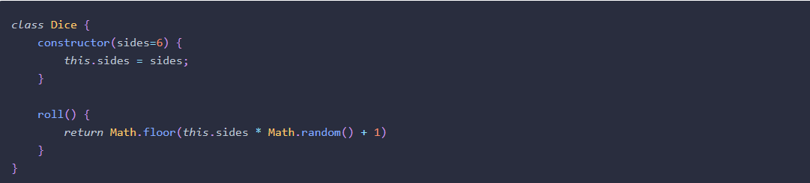
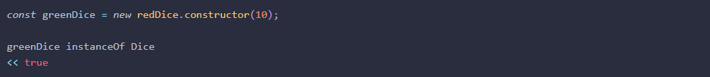
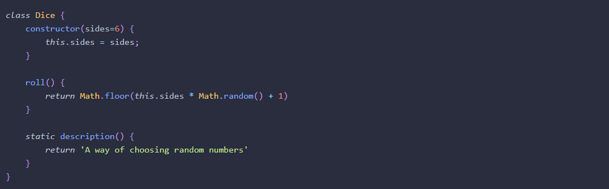
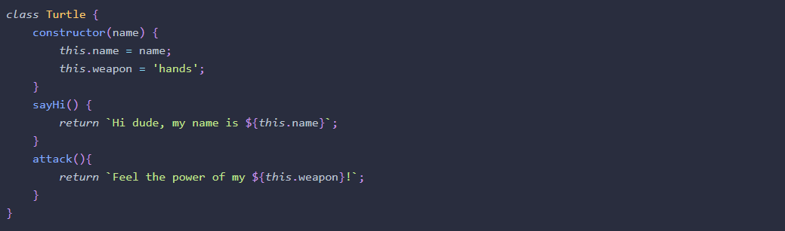
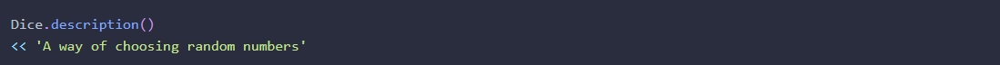
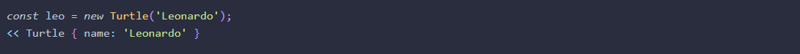
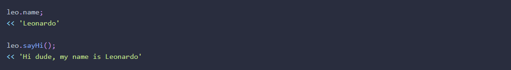

Coding practice
Novice to Ninja Ch.8: Forms
Form Properties and methods
- The form.submit() method will submit the form automatically. Note that submitting a form using this method won’t trigger the form submit event that's covered in the next section.
- A form can be submitted manually by the user employing a button or input element with a type attribute of submit, or even an input element with a type attribute of image
- The form.action property can be used to set the action attribute of a form, so it’s sent to a different URL to be processed on the server:
- The focus event occurs when an element is focused on. In the case of an input element, this is when the cursor is placed inside the element (either by clicking or tapping on it or navigating to it using the keyboard).
- The blur event occurs when the user moves the focus away from the form element.
- The change event occurs when the user moves the focus away from the form element after changing it. So if a user clicks in an input field and makes no changes, and then clicks elsewhere, the change event won’t fire, but the blur event will. Note that the blur event will also fire, but after the change event if there is any.
- Checkboxes can be checked initially using the 'checked' attribute in the HTML
- It is possible to find out the index of the option that has been selected, using the selectedIndex property.
Novice to Ninja Ch.12: Object-Oriented Programming in JavaScript
- Encapsulation: In OOP, this involves keeping all the programming logic inside an object and making methods available to implement the functionality, without the outside world needing to know how it’s done.
- Polymorphism: In OOP, this means various objects can share the same method, but also have the ability to override shared methods with a more specific implementation.
- Inheritance: Taking the features of one object then adding some new features. In OOP, this means we can take an object that already exists and inherit all its properties and methods. We can then improve on its functionality by adding new properties and methods.
- The ES6 class declarations are preferable to the constructor function syntax because they are more succinct, easier to read and all code in a class definition is implicitly in strict mode, so doesn't need the 'use strict' statement. 
- We can use the constructor property to instantiate a copy of an object, without having to reference the actual constructor function or class declaration directly. For example, if we wanted to make another copy of the redDice object, but if the name of its constructor was unknown, we could use the following: 
- The static keyword can be used in class declarations to create a static method. These are sometimes called class methods in other programming languages. A static method is called by the class directly rather than by instances of the class. 
- Static methods are not available to instances of the class. So, in our example, the instances of Dice such as redDice and blueDice cannot call the static description()method
- JavaScript uses a prototypal inheritance model. This means that every class has a prototype property that is shared by every instance of the class. So any properties or methods of a class’s prototype can be accessed by every object instantiated by that class. 
- The Prototype Property: Example
- Every object has a hasOwnProperty()method that can be used to check if a method is its own property, or is inherited from the prototype:
- The prototype can be used to add any new properties and methods after the class has been declared. It should be used to define any properties that will remain the same for every instance of the class.
- A golden rule to remember is:Never use arrays or objects as a default value in prototype. This is not a problem if arrays or objects are set as default values from within the constructor function in the class declaration.
- A mixin is a way of adding properties and methods of some objects to another object without using inheritance. It allows more complex objects to be created by ‘mixing’ basic objects together.
- The bind()method is a method for all functions and is used to set the value of this in the function.


